Knowledge Docs - Company Wiki with Revisions and a Public Reader
Write your company documentation, how-tos and policies in Odoo: every change keeps a revision with a readable diff and one-click restore, and pages are read in a clean docs site for employees, portal users or anyone with the link.
- Price
- $49
- Odoo versions
- 17.0
- 18.0
- 19.0
- 20.0
- Technical name
tamadoo_knowledge_docs- License
- OPL-1
Odoo 20.0: not listed on the store yet. Ask at tama.odoo@gmail.com.

Text and screenshots below are from the Odoo 20.0 version of this module.
Your company handbook, how-tos and customer guides as pages in Odoo: every change keeps a revision you can compare and restore, and everyone reads them in a clean documentation site, with or without a login.
Write in Odoo, read anywhere
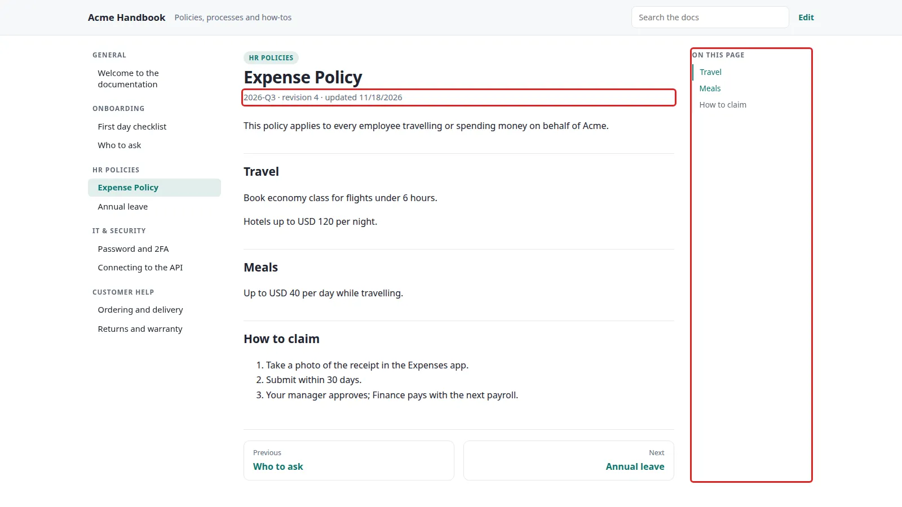

What you get
Pages in sections
Write with the Odoo HTML editor (tables, images, code), group pages in sections, add a summary, version label and owner.
Automatic revisions
Every real change to the text is kept with who and when; saving without a change, re-ordering or re-publishing adds nothing.
Readable diff
See what changed against the revision before, line by line in plain text, green added and red removed.
One-click restore
Bring back an older text; the current one stays in the history, and the chatter records the restore.
Clean reading site
/docs with sidebar, search, table of contents, previous / next, copy buttons on code, dark mode and phone layout.
Who may read
Per page: employees, employees and portal users, or anyone with the link. Hidden pages answer 404, like missing ones.
Public on purpose
Only Docs Managers can make a page public; editors write, employees read and comment through the chatter.
Portal card
Customers and vendors find the documentation from a card on their portal home.
Your brand
Site title, subtitle and accent colour in Settings. No Website app needed.
Step by step
Pages by section
All pages with version, revision, visibility, owner and when the text last changed. Drafts are greyed out.
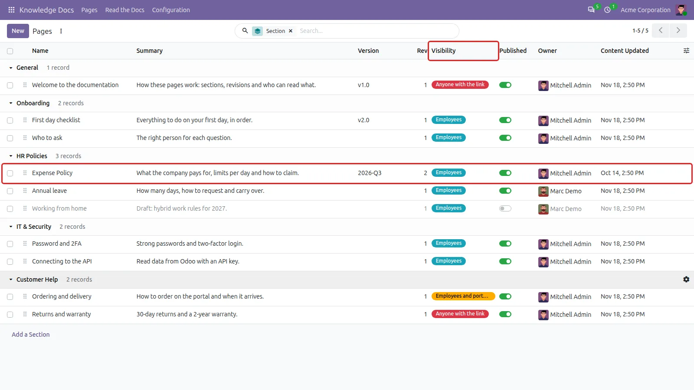
Edit a page
Marc (Docs Editor) adds a line to the Expense Policy in the Odoo editor.
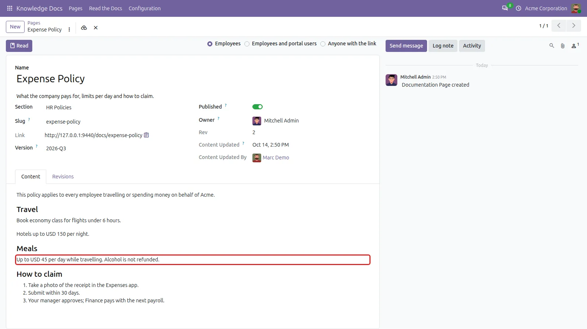
Revisions
Saving kept revision 3: who, when, lines added and removed.
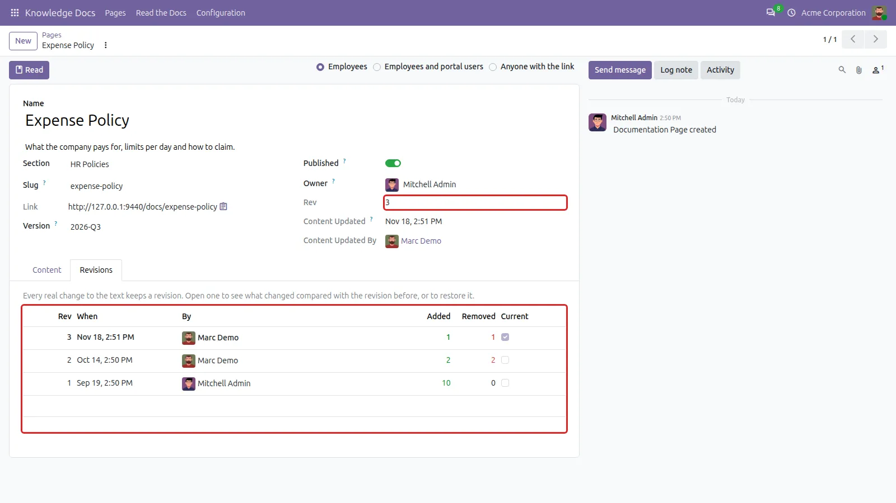
What changed
Open a revision for the line diff against the revision before.
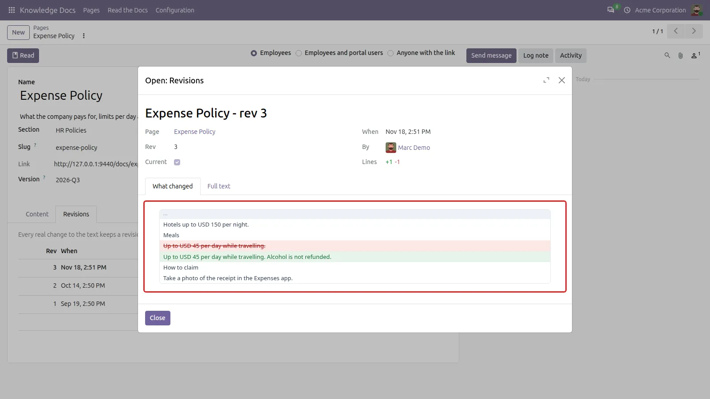
An older revision
Revision 1 as first written, with Restore this text.
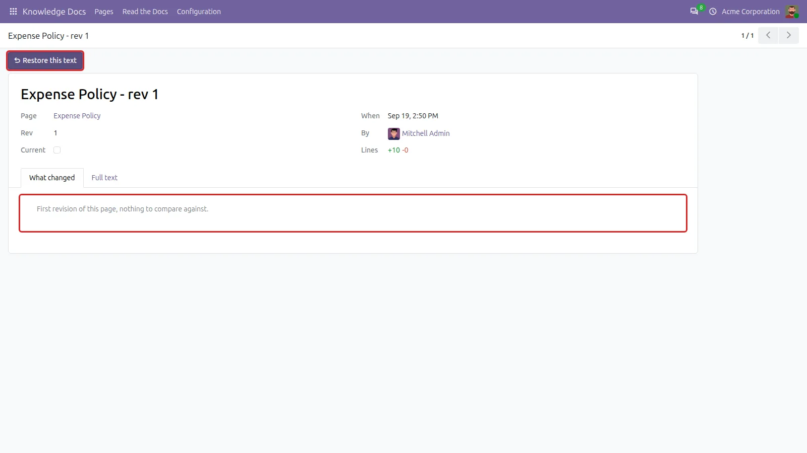
Restored
The page text is back to revision 1; the restore is revision 4 and is logged in the chatter.
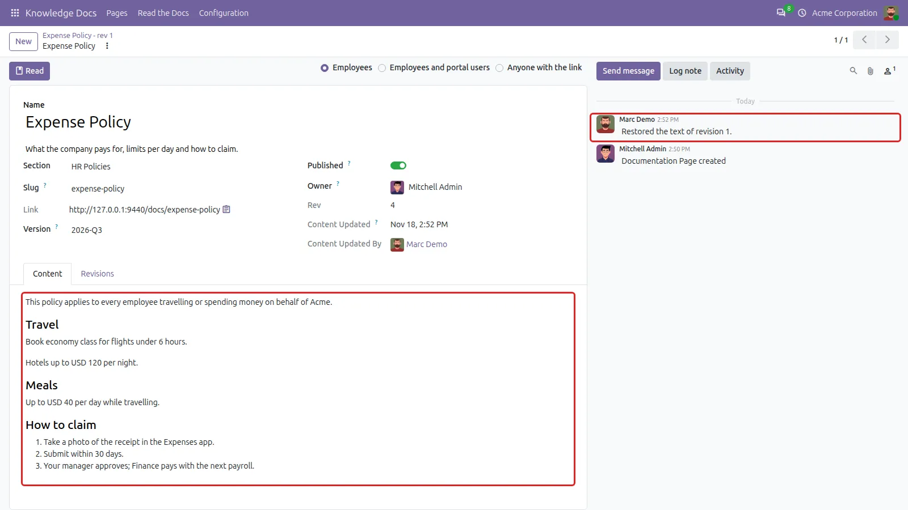
Public needs a manager
An editor cannot make a page readable by anyone with the link.
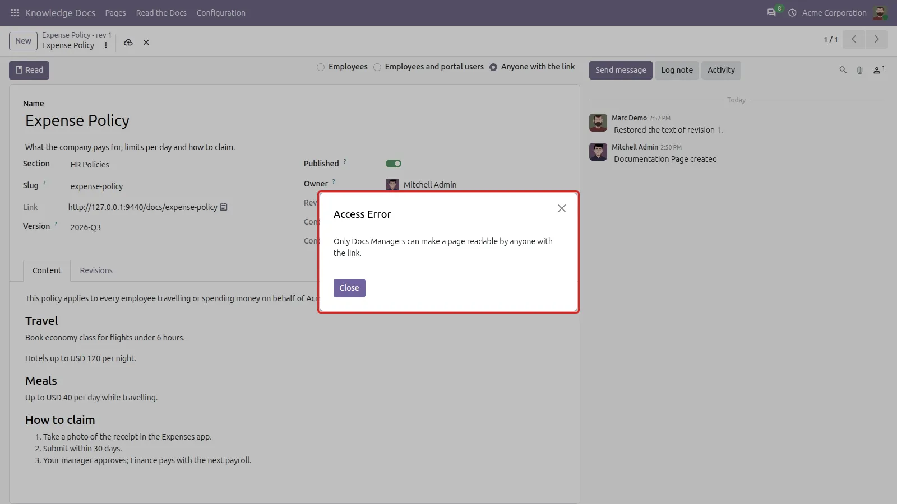
Reading site home
Sections with their pages as cards, at /docs.
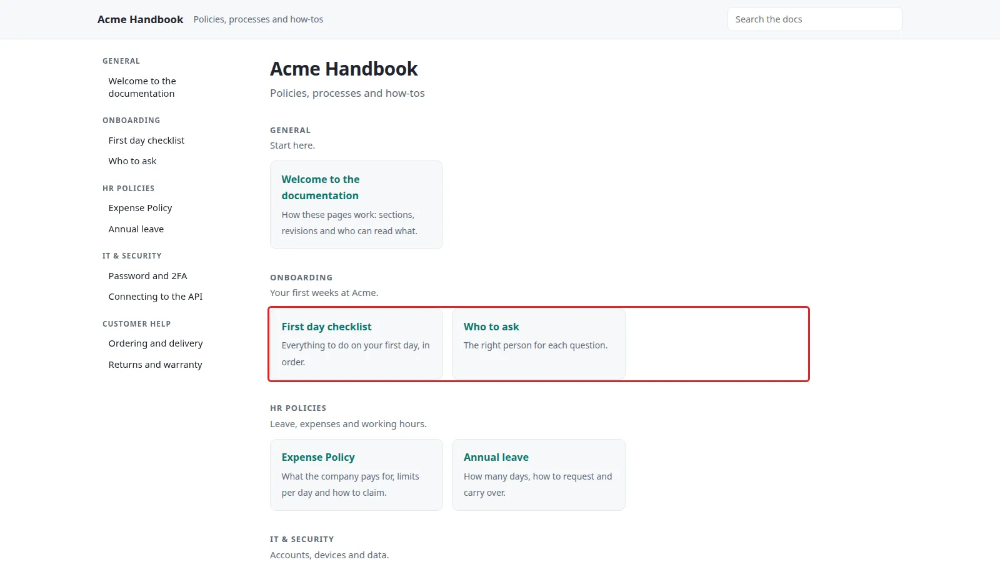
A page
Sidebar, version / revision / date, table of contents that follows the scroll, previous / next.

Search
Searches titles, summaries and text, with the matching sentence.
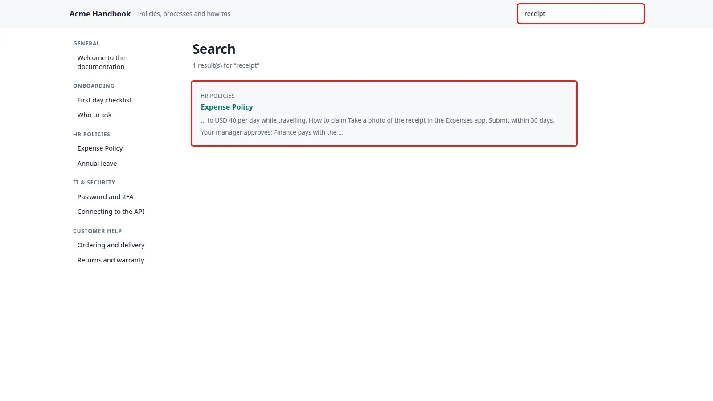
Code blocks
Technical pages get a copy button on every code block.
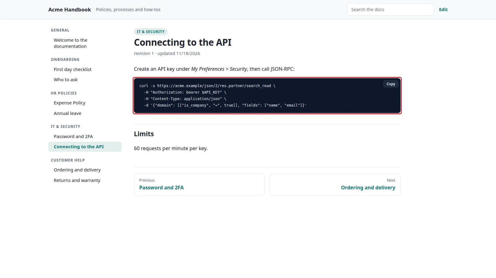
Portal card
A portal user finds Documentation on the portal home...
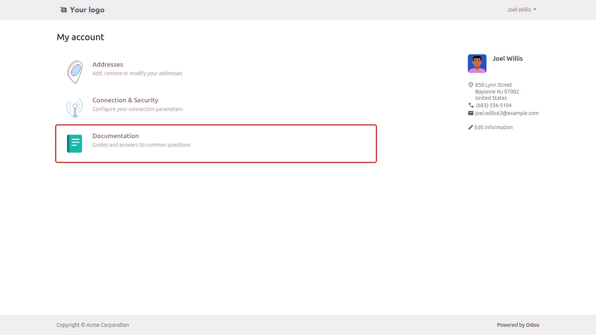
What a portal user reads
...and sees only pages for portal users and the public ones.
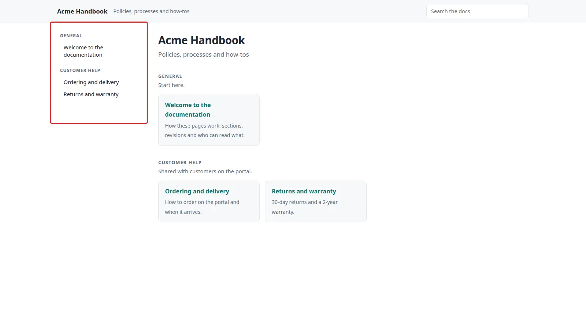
No login
A visitor without a login reads only the public pages.
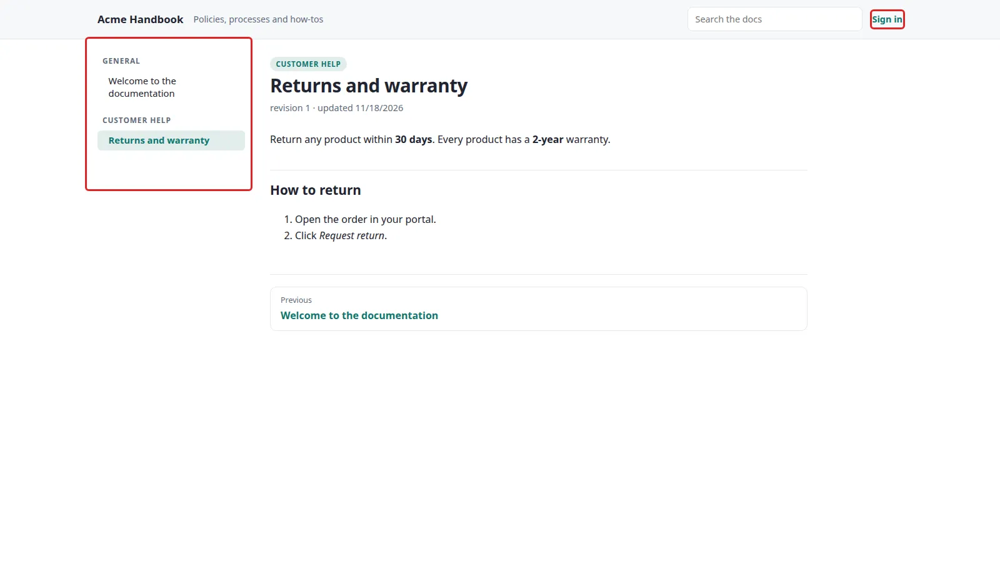
Not found
An employees-only page answers Page not found to a visitor, with a sign-in link.
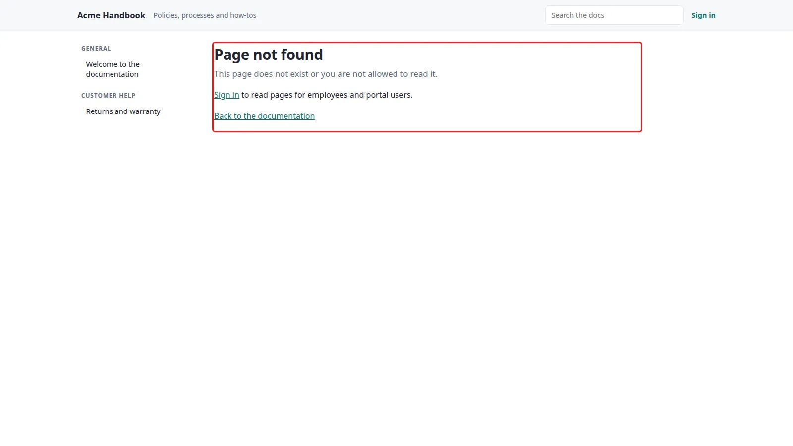
On a phone
The same page on a phone.
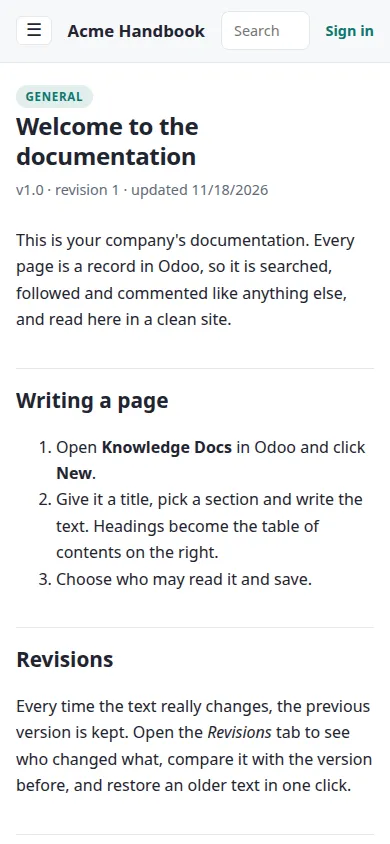
Phone menu
The sidebar opens from the menu button.
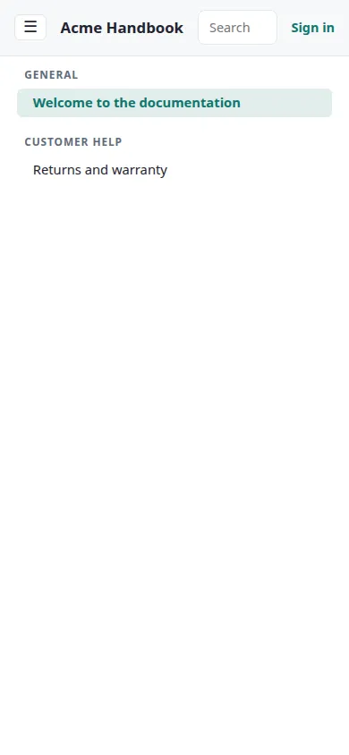
Dark mode
Follows the reader's system theme.
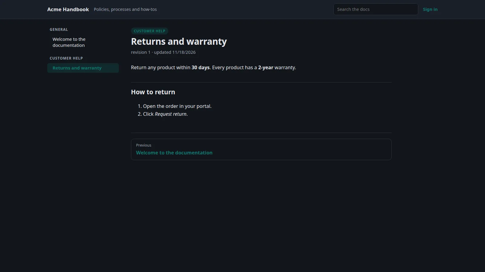
Settings
Title, subtitle and accent colour of the reading site.
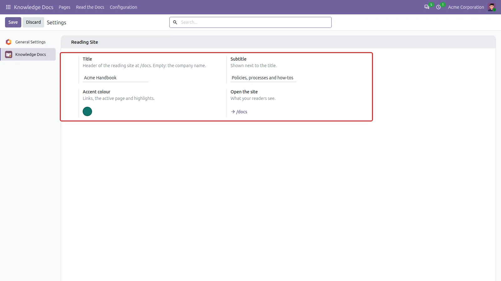
Set up in 5 minutes
- Install the module (depends on mail and portal). A welcome page shows how it works.
- Give writers the Knowledge Docs: Editor right, and whoever may publish to the internet Manager.
- Knowledge Docs → Configuration → Settings: site title, subtitle and colour.
- Knowledge Docs → Configuration → Sections: create your sections.
- Knowledge Docs → Pages → New: write a page, pick who may read it, save.
- Share /docs or a page link (the Link field on every page).
Get Knowledge Docs
Odoo 20.0: not listed on the store yet. Ask at tama.odoo@gmail.com.
Questions before buying? Write to tama.odoo@gmail.com.